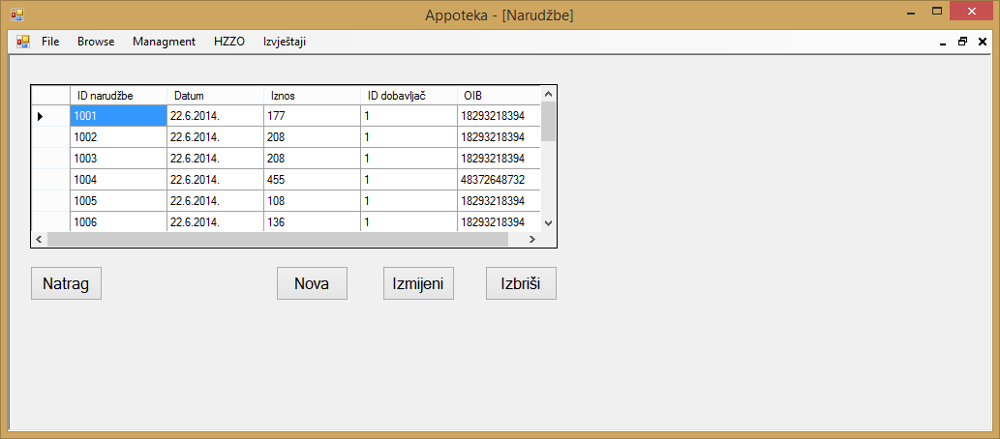
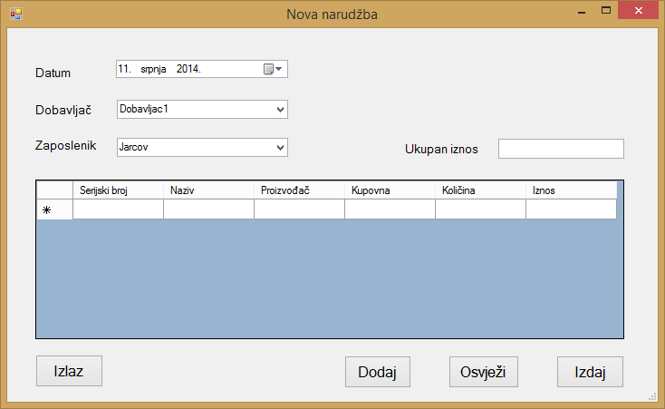
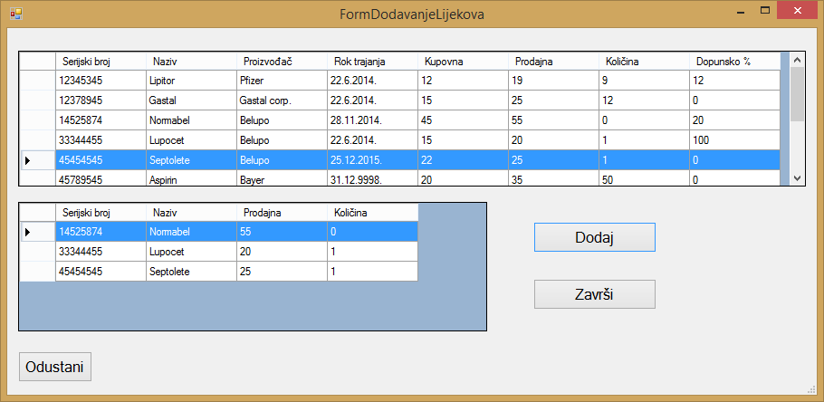
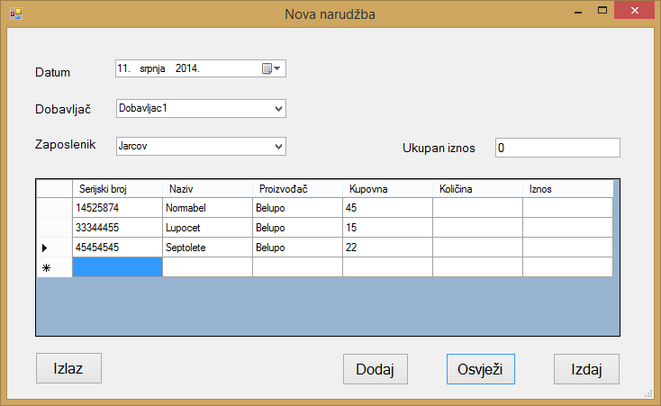

Klikom na gumb "Browse" u glavnom meniju otvara se izbor od tri stavke, to su "Lijekovi", "Narudžbe" i "Računi". Klikom na gumb "Narudžbe" otvara se prozor u kojemu se nalazi popis svih narudžbi koje su trenutno unesene u aplikaciju te su prikazani svi relevantni podaci o tim istim narudžbama.

Ako korisnik želi napraviti novu narudžbu, to može klikom na gumb "Nova" pri čemu se otvara novi prozor u kojemu korisnik aplikacije može unijeti podatke o novoj narudžbi.

Kada je korisnik aplikacije odabrao dobavljača, klikom na gumb "Dodaj" otvara se novi prozor u kojemu se dodaju lijekovi koje korisnik aplikacije želi naručiti. U tom prozoru vidljiv je sav popis lijekova u aplikaciji te podaci o tim lijekovima.

Određene lijekove koje želimo naručiti možemo naručiti tako da ih označimo te ih dodamo klikom na gumb "Dodaj". Kada su svi lijekovi koje želimo naručiti dodani, klikom na gumb "Završi" oni se prikazuju u tablici nove naružbe.

Nakon što su lijekovi koje želimo naručiti uneseni u tablicu nove narudžbe, odredimo količinu pojedinog lijeka kojeg želimo naručiti i nakon toga klikom na gumb "Osvježi" kako bi se za unijete količine izračunao iznos pojedinog lijeka te ukupan iznos. Klikom na gumb "Izdaj" aplikacija nam javlja da smo uspješno dodali novu narudžbu te nudi mogućnost ispisa narudžbe. Klikom na gumb "Izlaz" poništava se postupak dodavanja nove narudžbe.
Ako korisnik želi izmijeniti određenu narudžbu to može učiniti odabirom željene narudžbe i klikom na gumb "Izmijeni" nakon čega mu se nudi mogućnost dodavanja novih lijekova u narudžbu ili izmjene količina prethodno unesenih lijekova.
Ako korisnik želi izbrisati određenu narudžbu to može učiniti odabirom željene narudžbe i klikom na gumb "Izbriši", nakon čega se javlja poruka aplikacije u kojoj korisnik mora potvrditi da je siguran u svoj izbor. Klikom na gumb "Yes" odabrana narudžba se briše, dok se klikom na gumb "No" od postupka brisanja odustaje.
Klikom na gumb "Natrag" aplikacija korisnika vraća na početni zaslon aplikacije.